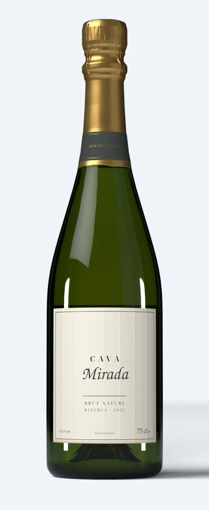

Qué revisamos en cada botella
Ayudamos a las bodegas a controlar la calidad de sus envases y etiquetas. Nuestras soluciones de visión artificial inspeccionan cada botella en tiempo real y detectan los defectos que afectan a la calidad, la seguridad y la imagen de marca.

1234Tapón y boca
Inspección del tapón a 360°: presencia, posición e integridad del cierre.
Nivel de líquido
Control del nivel de llenado de cada botella.
Etiqueta
Verificación envolvente de la posición, el estado y la información de las etiquetas.
Marcaje
Lectura OCR del lote, la fecha y otros datos impresos.